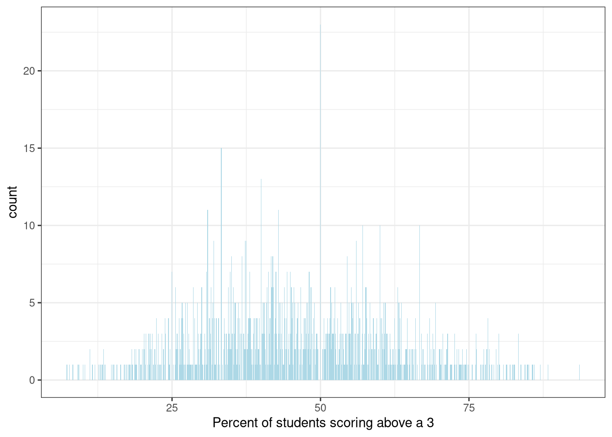
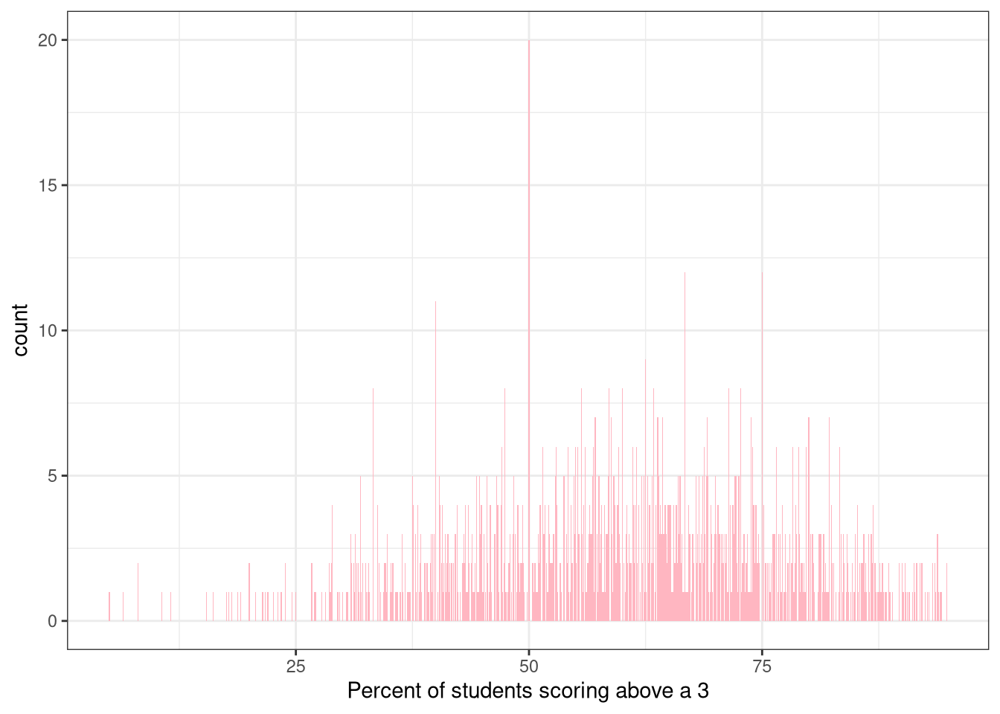
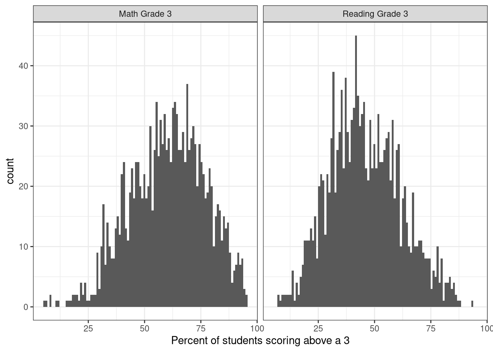
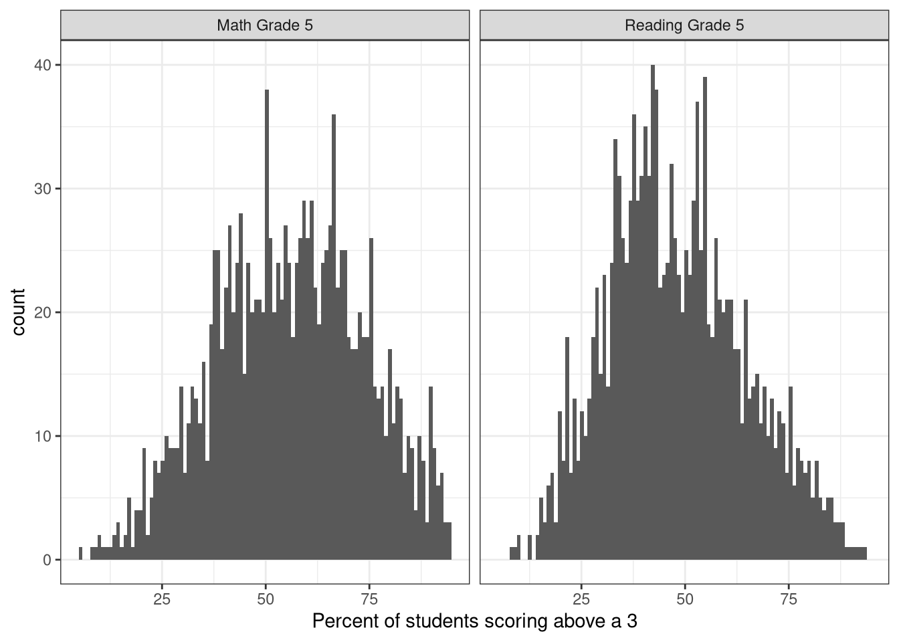
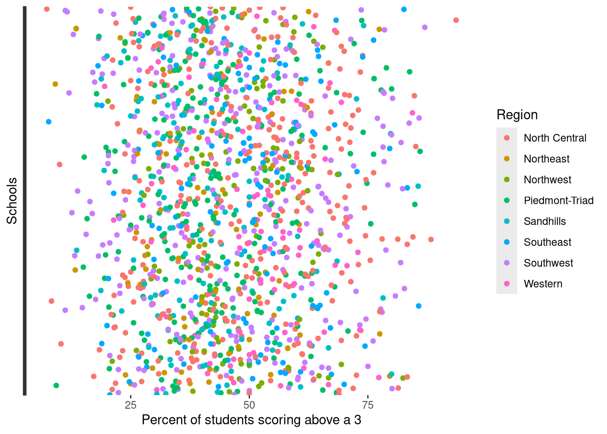
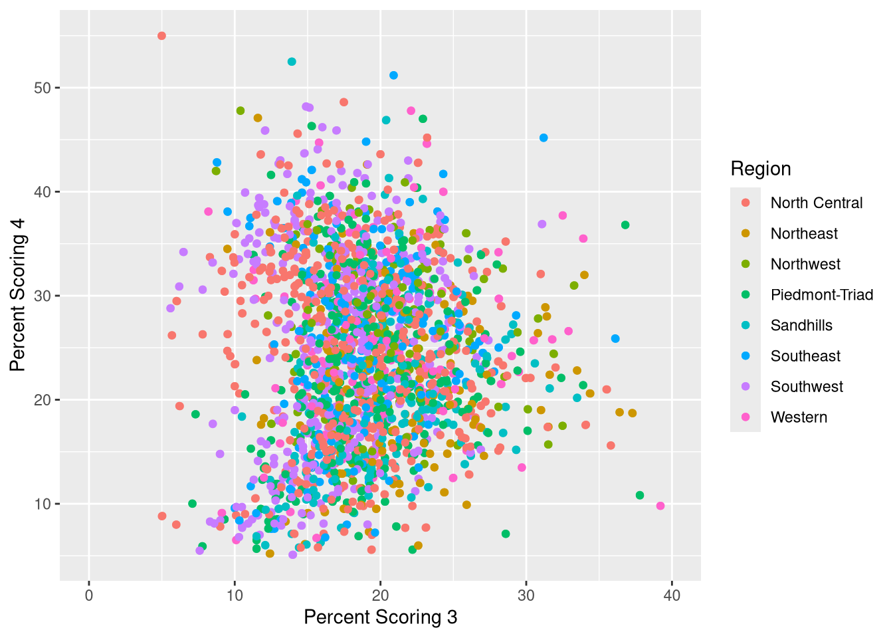
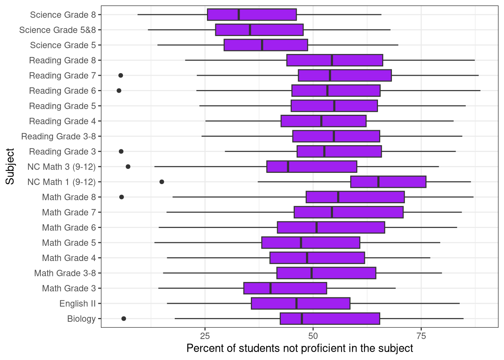
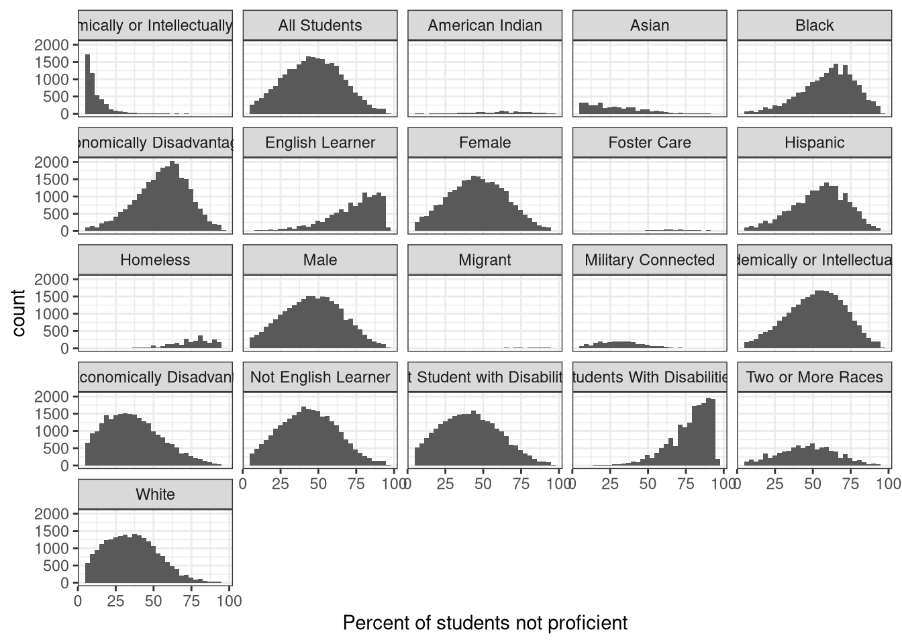

library(readxl)
testdata_eocg <- read_excel("Workbook5.xlsx")EOG and EOC data for NC
Understanding the data
This data comes from the “2023-24 North Carolina School Assessments and Other Indicators Workbook”. This data set contained many different pages on test scores and indicators from elementary school to high school, but I chose to focus on EOC and EOG scores among NC schools. First I read in the data, specifically the sheet of data I needed.
Then I downloaded the packages I needed to visualiza the data.
library(ggplot2)
library(dplyr)Here I changed the names of the columns and took out the first two rows of data because they were sub headers.
testdata_eocg <- testdata_eocg %>%
rename("District"= "Back to Introduction",
"School_Code" = "...2",
"School_Name" = "...3",
"Board_region"= "...4",
"Grade_span" = "...5",
"Subgroup" = "...6",
"Subject" = "...7",
"Not_Proficient" = "...8",
"Perc_Lev3" = "...9",
"Perc_Lev4" = "...10",
"Perc_Lev5" = "...11",
"Perc_ab3" = "...12",
"Perc_ab4" = "...13")testdata_eocg <- testdata_eocg[-c(1,2), ]Here I made some of the factors numeric in order to simplify the visualization.
testdata_eocg$Perc_ab3 <- as.numeric(testdata_eocg$Perc_ab3)
testdata_eocg$School_Code <- as.numeric(testdata_eocg$School_Code)
testdata_eocg$Not_Proficient <- as.numeric(testdata_eocg$Not_Proficient)
testdata_eocg$Perc_Lev3 <- as.numeric(testdata_eocg$Perc_Lev3)
testdata_eocg$Perc_Lev4 <- as.numeric(testdata_eocg$Perc_Lev4)Graphs of test score by school
testdata_eocg %>%
filter(!(School_Code == "NC")) %>%
filter(Subgroup == "All Students", Subject == "Reading Grade 3") %>%
ggplot(aes(Perc_ab3)) +
geom_bar(fill = "lightblue") +
theme_bw() +
labs(x="Percent of students scoring above a 3")
Based on this graph, it looks like many schools have 50 % of students scoring above a 3 and most of the data is concentrated between 38%-63%.
testdata_eocg %>%
filter(!(School_Code == "NC")) %>%
filter(Subgroup == "All Students", Subject == "Math Grade 3")%>%
ggplot(aes(Perc_ab3)) +
geom_bar(fill="lightpink") +
theme_bw() +
labs(x="Percent of students scoring above a 3")
This graph shows most schools having 50% - 75% of their students scoring above a 3.
testdata_eocg %>%
filter(!(School_Code == "NC")) %>%
filter(Subgroup == "All Students", Subject == "Math Grade 3"| Subject == "Reading Grade 3") %>%
ggplot(aes(Perc_ab3)) + geom_histogram(bins=100) +
facet_wrap(vars(Subject))+
theme_bw() +
labs(x="Percent of students scoring above a 3")
Through comparison we see that the test scores between subjects do not differ greatly, but percentages for Math tend to be a bit better.
testdata_eocg %>%
filter(!(School_Code == "NC")) %>%
filter(Subgroup == "All Students", Subject == "Math Grade 5"| Subject == "Reading Grade 5") %>%
ggplot(aes(Perc_ab3)) + geom_histogram(bins=100) +
facet_wrap(vars(Subject))+
theme_bw() +
labs(x="Percent of students scoring above a 3")
The graphs for 5th grade testing look very similar to the graphs from 3rd grade testing. There does not appear to be many differences.
testdata_eocg %>%
filter(!(School_Code == "NC")) %>%
filter(Subgroup == "All Students", Subject == "Reading Grade 3") %>%
ggplot(aes(Perc_ab3, School_Name, color = Board_region)) + geom_point() +
theme(axis.text.y = element_blank()) +
labs(x = "Percent of students scoring above a 3", y= "Schools", color = "Region")
There is not a clear pattern between the percent of students scoring above a 3 and the region where their school is.
testdata_eocg %>%
filter(!(School_Code == "NC")) %>%
filter(Subgroup == "All Students", Subject == "Math Grade 3-8") %>%
ggplot(aes(Perc_Lev3, Perc_Lev4, color = Board_region)) + geom_point() + geom_jitter() + xlim(0,40) + labs(x="Percent Scoring 3", y="Percent Scoring 4", color = "Region")
Even when Schools is no longer a variable there are no distinguishable patterns between test score and region.
Graphs of overall NC test data
testdata_eocg %>%
filter(District == "State of North Carolina") %>%
ggplot(aes(Not_Proficient, Subject)) +
geom_boxplot(fill= "purple") +
labs(x="Percent of students not proficient in the subject", y="Subject") +
theme_bw()
The Subject with the best proficiency appears to be Science . Reading and Math subjects appear to be similar to each other in terms of proficiency.
testdata_eocg %>%
filter(!(District == "State of North Carolina")) %>%
ggplot(aes(Not_Proficient)) +
geom_histogram() +
facet_wrap(vars(Subgroup)) +
theme_bw() +
labs(x="Percent of students not proficient")
Groups like Homeless students, English Learners, and Disabled students appear to be less proficient in terms of testing. There also seems to be very little data on Migrant students, students in Foster Care, and Native students.